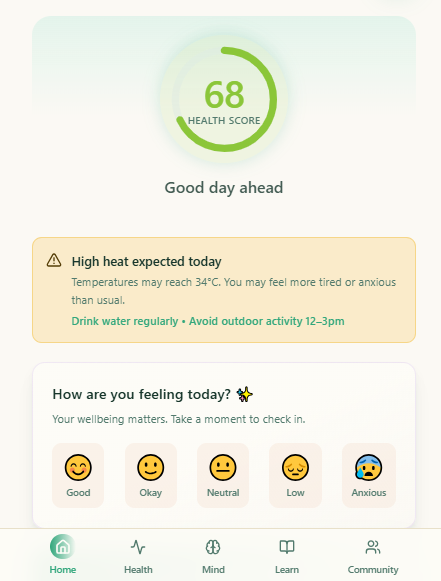
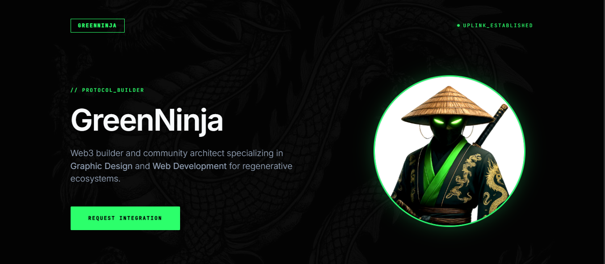

// PROTOCOL_BUILDER
GreenNinja
Web3 builder and community architect specializing in Graphic Design and Web Development for regenerative ecosystems.
Request Integration
Web Development
Graphic Design
ReFi Strategy
UI/UX Engineering
Discord Systems
Community Ops
Visual Core
Graphics Team Lead
- Designing data-dense visual systems.
- Standardizing brand identity.
Ecosystem Strategy
Communications Lead
- Engineering PR frameworks.
- Scaling community touchpoints.
Network Governance
Community Manager
- Optimizing retention loops.
- Synchronizing core dev updates.


$ query userinfo --alias mordiweb3
> Found 1 result: GreenNinja
> Status: Available for High-Impact Projects
> Found 1 result: GreenNinja
> Status: Available for High-Impact Projects